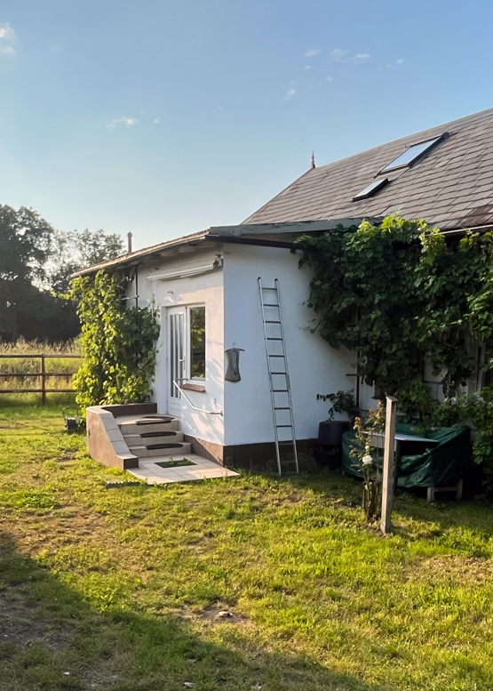

<tag> 8. August 2026
13:00 (CET+1)
(communal bike ride at 12:30🚲)
Moorburger Elbdeich 361, 21079 Hamburg

It’s a lovely bike ride (30–45 minutes) from the city through the old Elbtunnel, harbour, crossing a couple of bridges and riding on the Deich.
We will meet at Landungsbrücken for a communal bike ride at 12:30 and cycle together to Moorburg.
The Bus 250 goes from Bf. Altona and takes about 25 minutes to Moorburger Kreuzung which is about 5 minutes walking distance to the place.
Write and celebrate HTML together. And have a slice of pizza🍕 perhaps.
Follow our RSS feed.
Find or organize your own event! html.energy/events.html.